単一行テキスト
TEXT · 一行の自由入力欄
単一行テキストとは
- 1.1フィールドの追加と属性パネルの構成
1.1フィールドの追加と属性パネルの構成
概要
単一行テキスト(TEXT) は一行の自由入力欄です。被験者イニシャル · 検体番号 · 短いメモのように、改行が不要な短い文字列を入力させるときに使用します。複数行が必要な場合は複数行テキストを、数値の計算 · 範囲の比較が必要な場合は数値タイプを使用します。
画面説明
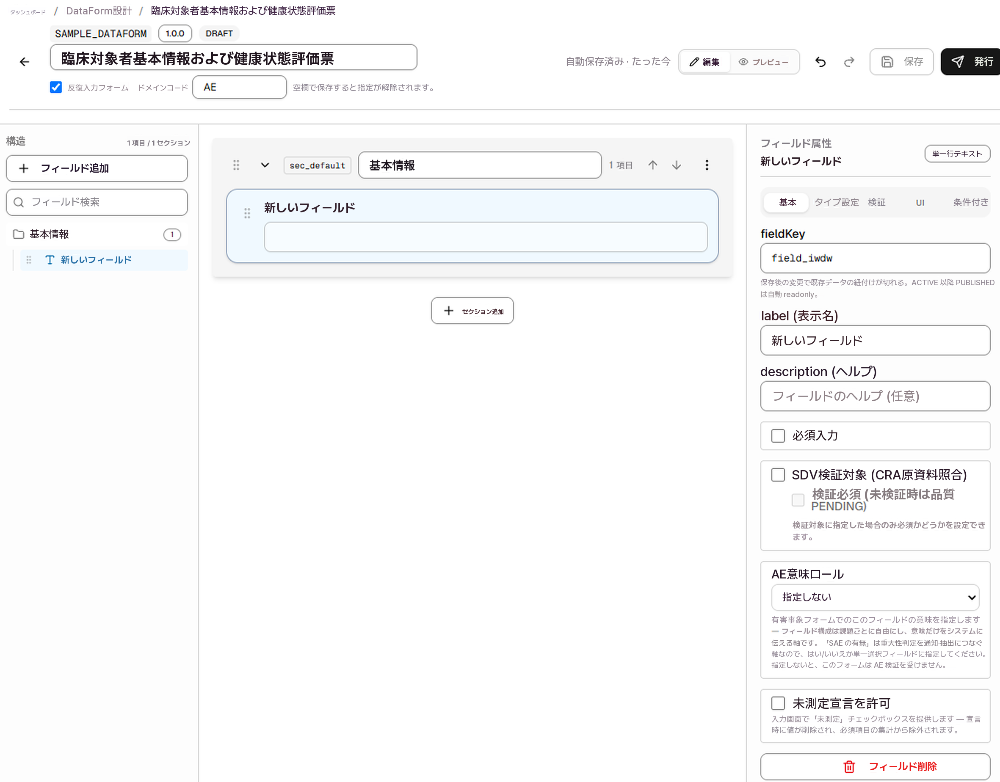
[+ フィールド追加] — ここでタイプを指定するとフィールドが作成されます。
構造ツリーに新しいフィールドが追加されます。(アイコン T)
WYSIWYG キャンバスに入力欄が表示されます。キャンバスは入力画面のプレビューなので、設定を変更するとすぐに反映されます。
fieldKey — 値が保存される実際のキーです。2.1
label (表示名) · description (ヘルプ) — 画面に表示される名前と補足説明です。2.1
必須入力 · SDV検証対象 · AE意味ロール · 未測定宣言を許可 — 2章で一つずつ説明します。
タイプバッジ — 選択したフィールドのタイプです。追加した後は変更できません。
属性タブ 5種 — 基本 · タイプ設定 · 検証 · UI · 条件付き。このマニュアルの2~6章が各タブに対応します。
注意事項
必須確認 データ破損 · フォーム完了不可
- • タイプは追加した後に変更できません。誤って選択した場合は、フィールドを削除して再度追加してください。(テーブル型 · フィールドグループの下位項目のみ例外としてタイプを変更できます。)
- • 発行(PUBLISH)後は構造を変更できません。運用中に修正が必要な場合は、新しいバージョンを発行してください。
誤解しやすい動作
- • 設定を変更すると、上部に「変更を検出 — 自動保存待ち」が表示されます。しばらくすると自動保存されます。[保存] を選択してすぐに保存することもできます。元に戻す操作は
Ctrl+Zです。
基本タブ — 名前 · 必須 · 検証対象 · 未測定
- 2.1fieldKey · 表示名 · ヘルプ
- 2.2必須入力
- 2.3SDV検証対象 (CRA原資料照合)
- 2.4未測定宣言を許可
2.1fieldKey · 表示名 · ヘルプ
概要
フィールドの名前を決める領域です。保存キー(fieldKey)と画面に表示される名前(label)は別々の値であり、変更してよいタイミングが異なります。
画面説明
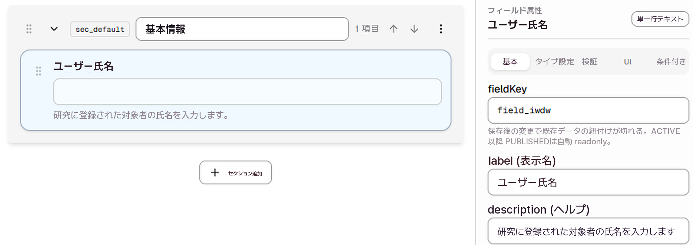
label (表示名) — 入力画面に表示する項目名を入力します。
キャンバスのフィールドタイトルとして表示されます。
description (ヘルプ) — 表示名の下に表示する補足説明を入力します。空欄にすると表示されません。
入力欄の下にグレーの文字で表示されます。
fieldKey — 値が保存される実際のキーです。フィールドを追加すると field_iwdw のように自動で付与され、英字 · 数字 · アンダースコアで変更できます。画面には表示されません — 下記の注意事項を必ず確認してください。
注意事項
必須確認 データ破損 · フォーム完了不可
- • ⛔ 保存した後は fieldKey を変更しないでください。画面の案内のとおり「保存後の変更で既存データの紐付けが切れる」 — すでに入力された値が新しいキーと結び付かず、事実上失われます。
- • フォームが ACTIVE 以降 PUBLISHED 状態になると、fieldKey 入力欄は自動で読み取り専用になります。システムが変更を防ぐのはそれ以降なので、それまではユーザー自身が注意する必要があります。
誤解しやすい動作
- • 表示名はいつ変更しても安全です。保存キーではなく画面の文言だからです。
参考
- • ヘルプ(
description)と UIタブのhelpTextは別々の項目です。違いは 5.4 で説明します。
2.2必須入力
概要
この項目を必ず入力する必要があるかを決めます。選択すると、入力画面で値が空のときに保存がブロックされます。
画面説明
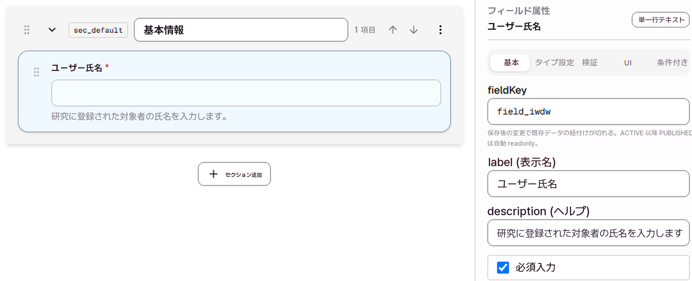
必須入力 — 選択すると、このフィールドが必須になります。
キャンバスの表示名の右に赤いアスタリスク(*)が表示され、ユーザーに必須であることを知らせます。
注意事項
必須確認 データ破損 · フォーム完了不可
- • 条件付き表示で非表示になったフィールドは、必須検証が免除されます。6章 表示されない項目を必須として求めると、フォームを完了できないためです。
- • UIタブの非表示は、必須集計から除外されません。条件付き表示と混同しないでください。5.3
誤解しやすい動作
- • 未測定宣言を許可した場合、ユーザーが「未測定」を宣言すると、そのフィールドは必須集計から除外されます。2.4
参考
- • 必須かどうかはフォーム完了判定に使用されます。必須項目が空の場合、そのフォームは完了として集計されません。
2.3SDV検証対象 (CRA原資料照合)
概要
SDV(Source Data Verification) は、臨床開発モニター(CRA)が入力値を医療機関の原資料と照合する手順です。このフィールドをその対象に指定するかどうかを、ここで決めます。
画面説明


SDV検証対象 (CRA原資料照合) — 選択すると、このフィールドが CRA の照合リストに含まれます。
選択状態に変わると、下位項目が有効になります。
検証必須 (未検証時は品質 PENDING) — ①を選択した後でなければ指定できません。選択すると、CRA が照合を終えるまで、そのデータの品質ステータスが PENDING のままになります。
①を選択する前は、②が薄く表示されて無効です。画面の案内のとおり「検証対象に指定した場合のみ必須かどうかを設定できます。」
注意事項
必須確認 データ破損 · フォーム完了不可
- • 値が変更されると検証が解除されます。すでに VERIFIED のフィールドの値を修正すると、品質ステータスが PENDING に戻り、CRA が再度照合する必要があります。
誤解しやすい動作
- • SDV は入力した本人が実施することはできません。システムがクロス検証(Cross-User SoD)を強制するため、入力者と検証者は必ず別の人である必要があります。
参考
- • 品質ステータスは PENDING → VERIFIED → CLEAN の順に進みます。検証必須に指定したフィールドが一つでも未検証であれば、そのデータは CLEAN になりません。
- • すべてのフィールドを SDV 対象に指定すると、モニタリングの負担が急激に増加します。主要評価項目 · 安全性項目を中心に指定してください。
2.4未測定宣言を許可
概要
検査を実施できなかった場合を値として区別して記録する機能です。空欄のままにすると「まだ入力していない」と「測定していない」を区別できません。この宣言がその二つを区別します。
画面説明

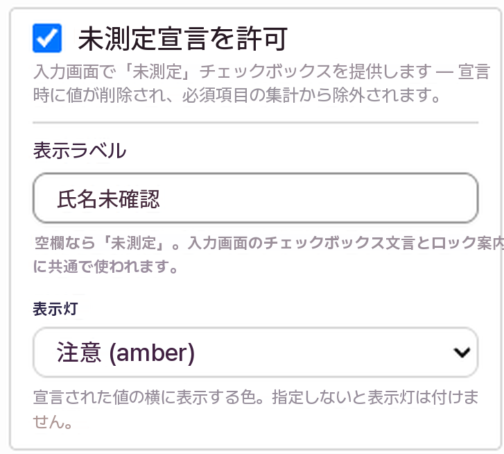
未測定宣言を許可 — 選択すると、入力画面に「未測定」チェックボックスが作成され、下の二つの項目が表示されます。
表示ラベル — 空欄にすると、デフォルト値「未測定」が適用されます。
氏名未確認 に変更すると、この文言が入力画面のチェックボックスとロック案内の両方に適用されます。
表示灯 — デフォルト値はなしです。
注意(amber) に変更すると、宣言された値の横にその色の表示が現れます。
注意事項
必須確認 データ破損 · フォーム完了不可
- • 宣言すると値が削除されます。画面の案内のとおり — 「宣言時に値が削除され、必須項目の集計から除外されます。」 入力済みの内容がある場合は削除されるため、ユーザーに事前に案内してください。
誤解しやすい動作
- • 宣言されたフィールドは必須集計から除外されます。そのため、必須項目であってもフォームを完了できます。
参考
- • 表示灯を指定しないと、色の表示は適用されません。強調が必要な場合は、注意(amber) などを選択してください。
- • 検査の未実施が頻繁に発生する項目(欠測が臨床的に意味を持つ項目)に使用する機能です。すべてのフィールドに適用する必要はありません。
タイプ設定タブ — 入力形式
- 3.1タイプ設定タブの全体構成
- 3.2最小 · 最大の長さ
- 3.3正規表現 (pattern)
- 3.4プレフィックス · サフィックス (prefix · postfix)
- 3.5デフォルト値 (defaultValue)
3.1全体構成
概要
入力形式を決めるタブです。ここで指定した値は保存時にシステムが再度チェックするため、画面上で案内するだけの文言ではなく、実際のブロック条件です。
画面説明
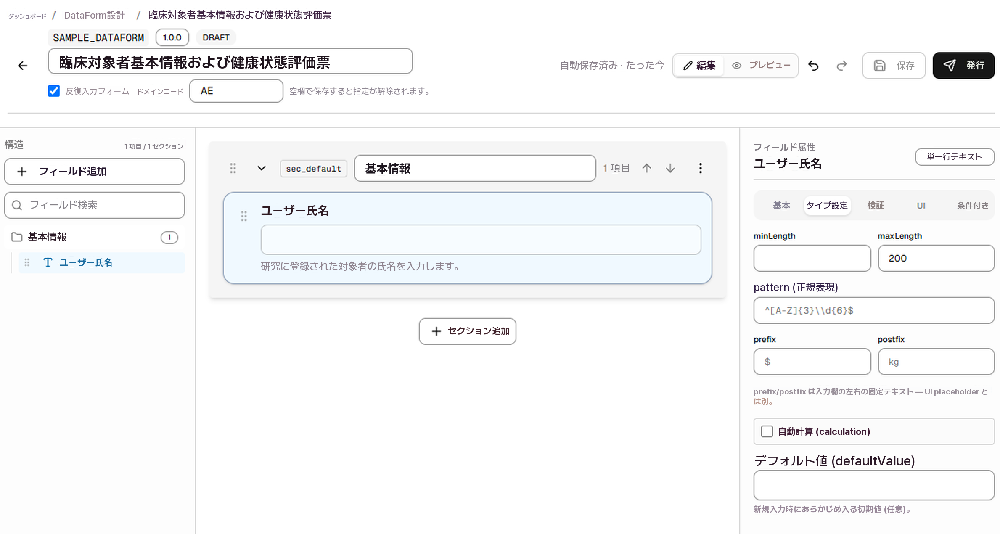
minLength · maxLength — 文字数の下限と上限です。3.2
pattern (正規表現) — 値が従うべき形式です。3.3
prefix · postfix — 入力欄の左右に固定で表示される文言です。3.4
画面の案内 — 「prefix/postfix は入力欄左右の固定テキスト — UI placeholder とは別。」
デフォルト値 (defaultValue) — 新規入力時にあらかじめ入力しておく値です。3.5
注意事項
必須確認 データ破損 · フォーム完了不可
- • 反対に、濃い文字で表示される値(キャプチャの maxLength
200)はすでに設定された値です。不要な場合は、値を消さないと制限は解除されません。
誤解しやすい動作
- • 入力欄に薄い文字で表示される
^[A-Z]{3}\d{6}$·$·kgは入力例(placeholder)であり、設定された値ではありません。空欄の場合、その制限は適用されません。
参考
- • すべての項目は任意です。何も設定しない場合、長さ · 形式の制限がない自由入力欄になります。
- • このタブの構成は、フィールドを作成するときに選択したタイプで固定されます。タイプが異なると、このタブの項目も異なります。
3.2最小 · 最大の長さ
概要
入力できる文字数の範囲を決めます。二つの項目は互いに独立しているため、片方だけ入力しても動作します。
画面説明
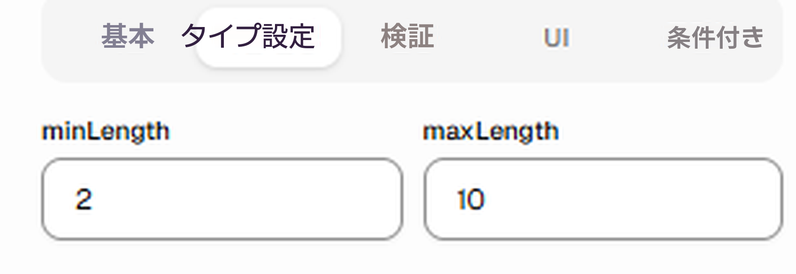
minLength — 最小文字数です。例の 2 は「2文字以上」を意味します。
maxLength — 最大文字数です。例の 10 は「10文字以下」を意味します。
注意事項
必須確認 データ破損 · フォーム完了不可
- • 長さの制限はキャンバスの見た目を変更しません。画面では確認できず、値が範囲を外れたときに保存の段階でブロックされます。
- • すでに運用中のフォームで制限を狭めると、既存のデータが新しい制限に違反した状態で残ることがあります。その値は再度保存するときにブロックされるため、発行後の縮小は慎重に決めてください。
誤解しやすい動作
- • 片方だけ設定しても構いません — 上限だけを適用するには、maxLength だけを入力してください。
参考
- • 長さは空白を含めて計算します。前後の空白も1文字です。
- • 「必ず N 文字」に固定するには、二つの項目に同じ数を入力するか、正規表現を使用してください。3.3
3.3正規表現 (pattern)
概要
値が従うべき形式を正規表現で指定します。長さの制限だけでは表現できない規則(ハングルのみ · 英字イニシャル · 検体番号の体系など)を適用するときに使用します。
画面説明
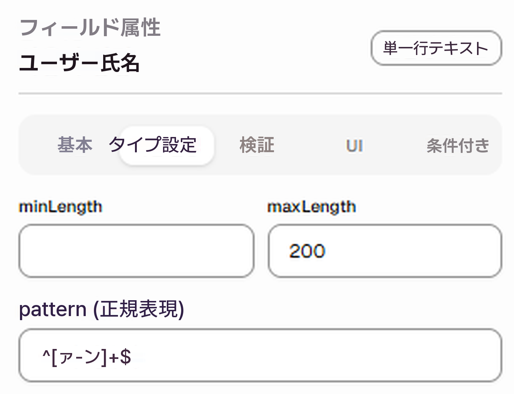
^[\uAC00-\uD7A3]+$ を入力し、ハングルのみを許可した状態 (属性パネル)pattern (正規表現) — 例の ^[\uAC00-\uD7A3]+$ は「ハングルのみ、1文字以上」を意味します。氏名入力欄に英字 · 数字が混ざって入力されるのを防ぎます。この形式から外れた値は保存されません。
注意事項
必須確認 データ破損 · フォーム完了不可
- • 形式が合わない場合、ユーザーは保存の段階になって初めてブロックされます。どのような形式かを placeholder や helpText で事前に案内してください。5.4
誤解しやすい動作
- •
^は先頭、$は末尾を意味します。二つを省略すると値の一部が一致するだけで通過するため、通常は一緒に使用します。 - • 同じチェックを、検証タブの「形式 (正規表現)」規則で設定することもできます。違反時に表示する文言を直接指定する必要がある場合は、そちらを使用してください。4.3
- • 正規表現のチェックは大文字と小文字を区別します。小文字も許可するには、
^[A-Za-z]+$のように範囲に一緒に指定してください。
参考
- • 正規表現と長さの制限3.2は一緒に適用されます。両方を満たした場合のみ保存されます。
- • 複雑な正規表現は入力ミスの原因になります。必要最小限で使用してください。
よく使う形式
| 用途 | 正規表現 | 通過する例 |
|---|---|---|
| ハングル氏名 | ^[\uAC00-\uD7A3]+$ | Hong Gildong (ハングル表記) |
| 被験者イニシャル (英大文字 2~3 文字) | ^[A-Z]{2,3}$ | KHJ |
| 検体番号 (英大文字 3 + 数字 6) | ^[A-Z]{3}\d{6}$ | ABC123456 |
| 数字のみ | ^[0-9]+$ | 12345 |
3.4プレフィックス · サフィックス (prefix · postfix)
概要
入力欄の外側の左右に固定で表示される文言です。単位や区切りの文言のように、ユーザーが入力しなくても常に同じ内容を表示するときに使用します。
画面説明
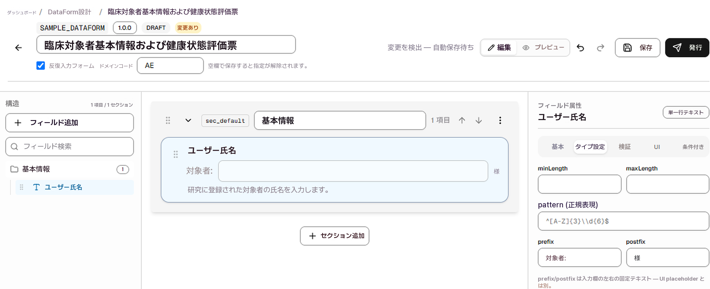
prefix — 入力欄の左側に表示する文言を入力します。例は 対象者: です。
キャンバスの入力欄の左側に「対象者:」が固定で表示されます。
postfix — 入力欄の右側に表示する文言を入力します。例は 様 です。
キャンバスの入力欄の右側に「様」が固定で表示されます。
注意事項
必須確認 データ破損 · フォーム完了不可
- • prefix · postfix は保存される値ではありません。画面にだけ表示される固定の文言で、データにはユーザーが入力した文字だけが保存されます。
誤解しやすい動作
- • 画面の案内のとおり — 「prefix/postfix は入力欄左右の固定テキスト — UI placeholder とは別。」 placeholder は値がないときだけ入力欄の中に薄く表示され、入力すると消えますが、prefix/postfix は入力欄の外側に表示され続けます。
参考
- • 単位を postfix で表示すると、ユーザーが単位まで一緒に入力するミスを減らせます。
- • 数値と単位を扱う項目であれば、単一行テキストより数値タイプの方が適しています — 数値タイプは単位(unit)と範囲の検証を別途提供します。
3.5デフォルト値 (defaultValue)
概要
新しい入力を始めるときにあらかじめ入力しておく値です。ほとんどの被験者が同じ値を入力する項目で、入力の負担を減らします。
画面説明
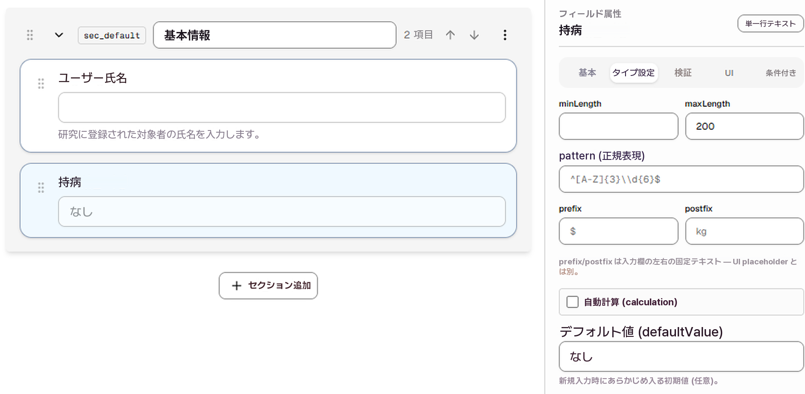
なし — キャンバスの入力欄にあらかじめ入力された状態で表示されるデフォルト値 (defaultValue) — 新規入力時にあらかじめ入る初期値を入力します。(任意)
キャンバスの入力欄にデフォルト値が入力された状態で表示されます。
注意事項
必須確認 データ破損 · フォーム完了不可
- • デフォルト値はユーザーが確認した値ではありません。そのまま保存されると、実際にその値なのか確認されないままデータが蓄積されます。臨床的に重要な項目には、デフォルト値を指定しない方が安全です。
- • キャプチャの
なしのように特定の文言をデフォルト値に指定すると、実際に未測定の項目と区別できません。検査の未実施を区別して記録する必要がある場合は、「未測定宣言を許可」を使用してください。2.4
誤解しやすい動作
- • デフォルト値は、新しく作成する入力にのみ適用されます。すでに保存されたデータは変更されません。
参考
- • デフォルト値も長さ · 正規表現の制限3.2 · 3.3を満たす必要があります。制限に合わないデフォルト値は、保存の段階でブロックされます。
検証タブ — 保存前の値チェック
- 4.1検証規則がない状態
- 4.2規則の追加
- 4.3規則作成完了
4.1検証規則がない状態
概要
保存する前に値が条件に合っているかをチェックする規則をまとめておくタブです。タイプ設定3章の長さ · 形式の制限よりも細かい条件を適用するときに使用します。
画面説明
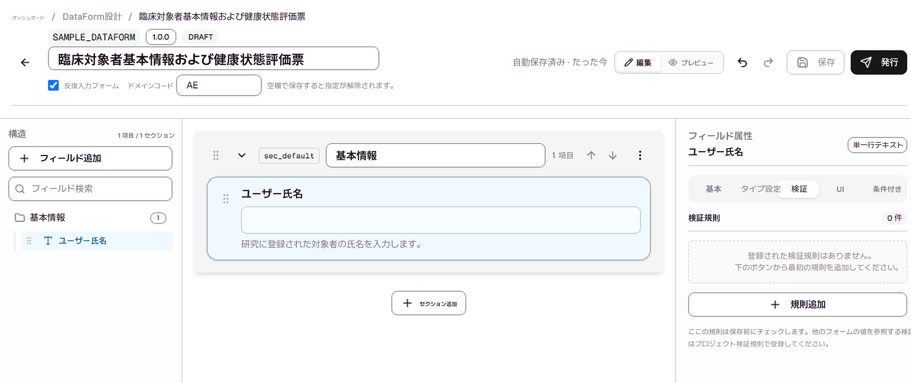
[+ 規則追加] — 最初の規則を作成します。選択した後の画面は 4.2 で説明します。
検証規則領域と、登録された規則数です。最初は 0 件 です。
規則がない場合は、「登録された検証規則はありません。下のボタンから最初の規則を追加してください。」という案内が表示されます。
下部の案内 — 「ここの規則は保存前にチェックします。他のフォームの値を参照する検証はプロジェクト検証規則で登録してください。」
注意事項
必須確認 データ破損 · フォーム完了不可
- • 他のフォームの値を参照する検証は、ここでは作成できません。そのような規則は「プロジェクト検証規則」画面で登録してください。このタブは、同じフォーム内で完結するチェックのみを扱います。
誤解しやすい動作
- • 規則は複数作成でき、有効な規則をすべて満たした場合に保存されます。
参考
- • 規則を作成しなくても構いません。タイプ設定の長さ · 正規表現だけで十分な場合が多くあります。
4.2規則の追加
概要
4.1 の [+ 規則追加] を選択すると、規則 1 ブロックが作成されます。規則は複数作成でき、それぞれ個別に有効 · 無効にできます。
画面説明
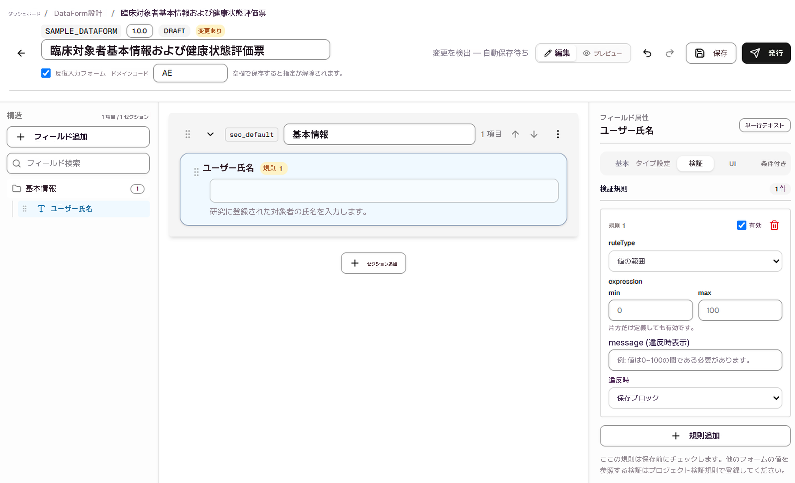
[+ 規則追加] — 規則をもう一つ作成します。(4.1 で選択したのと同じボタンです。)
「規則 1」ブロックが作成され、キャンバスの表示名の横に「規則 1」バッジが表示されます。
規則数が 1 件 に変わります。
有効チェックボックスと削除アイコン — チェックを外すと、規則を削除せずに一時的に停止できます。削除アイコンは、規則を完全に削除します。
ruleType — 規則の種類です。キャプチャは値の範囲を選択した状態です。
min — 範囲の下限です。
max — 範囲の上限です。
薄い文字の 0 · 100 と「例: 値は0~100の間である必要があります。」は入力例であり、設定された値ではありません。画面の案内のとおり「片方だけ定義しても有効です。」
message (違反時表示) — 規則に違反したときに、ユーザーに表示する文言です。
違反時 — 保存ブロックまたは警告から選択します。
注意事項
必須確認 データ破損 · フォーム完了不可
- • message を空欄にすると、ユーザーはブロックされた理由が分かりません。必ず入力してください。
- • 単一行テキストに「値の範囲」規則を適用するときは注意してください。このタイプは値を文字列として保存するため、数値の大小比較が目的であれば、数値タイプの方が適しています。
誤解しやすい動作
- • [+ 規則追加] を再度選択すると、規則 2、3 … を追加できます。有効な規則をすべて満たした場合に保存されます。
参考
- • 保存ブロックは値を修正するまで保存をブロックし、警告は知らせますが保存は許可します。データ整合性が重要な項目には、保存ブロックを使用してください。
4.3規則作成完了
概要
4.2 の空欄の項目を最後まで入力した状態です。この設定では、ハングル以外の値を入力したときに保存がブロックされ、指定した文言が表示されます。
画面説明
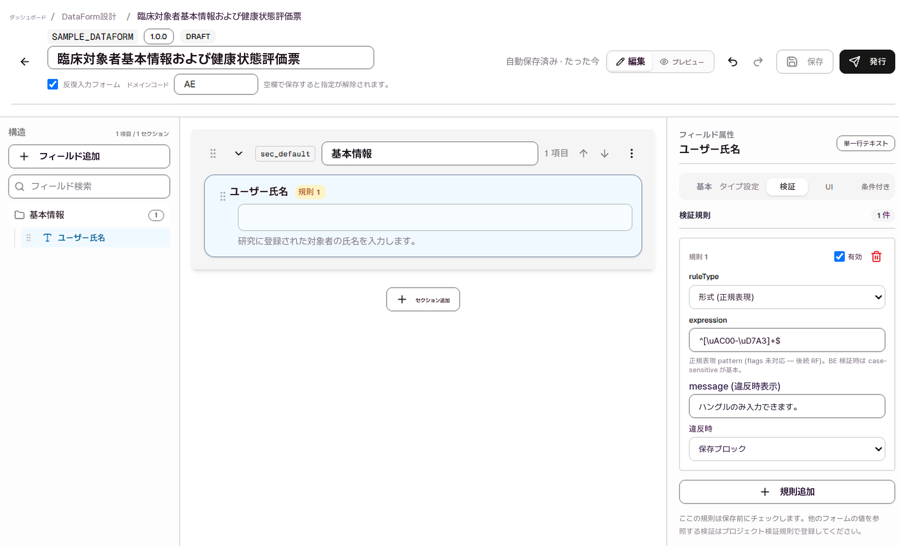
ruleType = 形式 (正規表現) — 値の形式をチェックする規則です。
expression = ^[\uAC00-\uD7A3]+$ — 「ハングルのみ、1文字以上」を意味します。
画面の案内 — 正規表現のチェックは大文字と小文字を区別します。(flags の指定はサポートしていません。)
message = ハングルのみ入力できます。 — どのように修正すればよいかを知らせる文言が適切です。
違反時 = 保存ブロック — 条件を満たすまで保存されません。
注意事項
必須確認 データ破損 · フォーム完了不可
- • 両方を同時に設定すると、両方を満たした場合のみ保存されます。互いに矛盾する形式を指定すると、どの値も保存できなくなるため、片方だけを使用するほうが安全です。
誤解しやすい動作
- • 3.3 で pattern として設定したものと同じ正規表現です。タイプ設定の pattern3.3 と検証タブの形式(正規表現)規則は、チェック内容が同じです。違いは、違反時の文言と処理方法を直接指定できる点です — ユーザーに理由を知らせる必要がある場合は、検証規則を使用してください。
- • 規則を保存した後でも、有効のチェックを外すとすぐに適用が停止されます — 規則を削除せずに一時停止するときに使用します。4.2 ②
参考
- • タイプ設定3章と検証規則4章は一緒に適用されます。長さの制限と検証規則の両方を満たした場合のみ保存されます。
UIタブ — 画面配置と案内文
- 5.1UIタブの全体構成
- 5.2レイアウト幅
- 5.3読み取り専用 · 非表示
- 5.4placeholder · helpText
5.1全体構成
概要
値そのものではなく、画面にどう配置し、どう案内するかを決めるタブです。このタブの設定は、保存されるデータそのものを変更しません。ただし、非表示は画面上で隠すだけで必須集計からは除外されないため、使用する前に 5.3 を確認してください。
画面説明
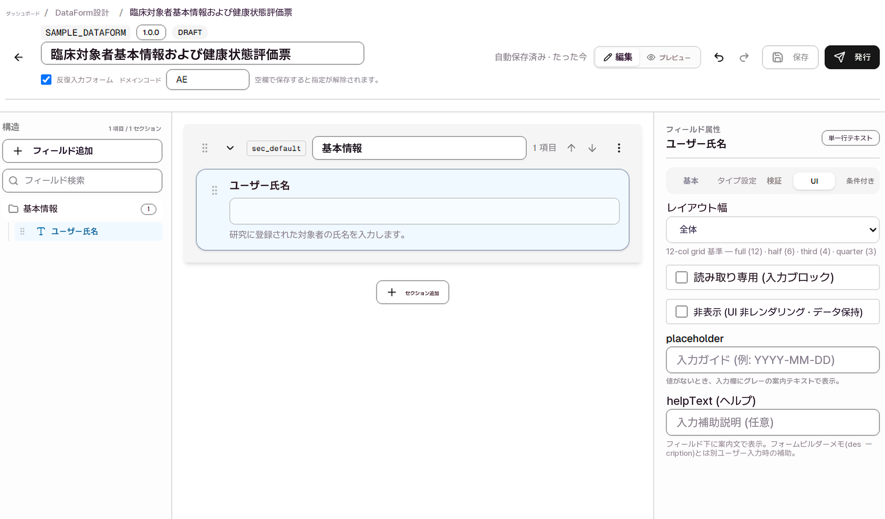
レイアウト幅 — 一行の中でこのフィールドが占める幅です。選択肢の意味は、すぐ下の案内「12-col grid 基準 — full (12) · half (6) · third (4) · quarter (3)」に記載されています。5.2
読み取り専用 (入力ブロック) — 表示はしますが、修正できないようにします。5.3
非表示 (UI 非レンダリング · データ保持) — 画面から隠します。5.3
placeholder — 値がないときに入力欄の中に表示されるグレーの案内です。5.4
helpText (ヘルプ) — フィールドの下に表示される案内文です。5.4
注意事項
誤解しやすい動作
- • 入力欄に薄く表示される
入力ガイド (例: YYYY-MM-DD)·入力補助説明 (任意)は入力例であり、設定された値ではありません。
参考
- • デフォルト値はレイアウト幅 = 全体、読み取り専用 · 非表示は解除状態です。
- • すべての項目は任意です。そのままにしておいても、フォームは正常に動作します。
5.2レイアウト幅
概要
一行を12列に分けた12-column grid上で、このフィールドが占める幅を選択します。幅の狭い項目を並べて配置し、フォームの長さを短くするときに使用します。
画面説明
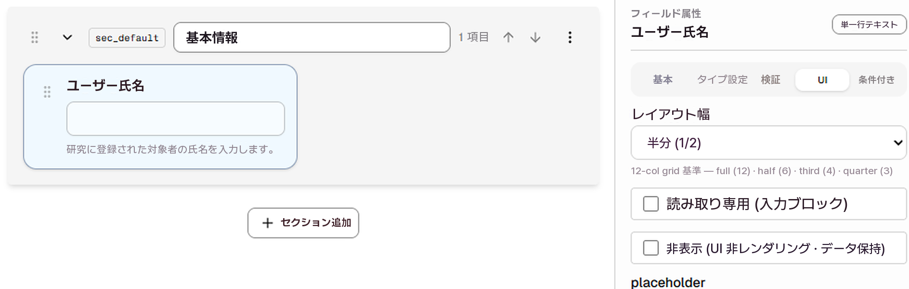
レイアウト幅 — 選択リストから幅を指定します。例は半分 (1/2)です。
キャンバスの入力欄が半分の幅に縮小されます。
注意事項
必須確認 データ破損 · フォーム完了不可
- • 長い値を入力させる項目を狭く設定すると、入力欄に一度に見える文字数が減り、誤字脱字を確認しにくくなります。長さの制限3.2と合わせて検討してください。
誤解しやすい動作
- • 幅を狭めると、次のフィールドが同じ行に配置されます。一行の合計が12を超えると、次の行に移ります。
参考
- • 画面幅が狭い端末では、設定に関係なく一行に一つずつ縦に配置されることがあります。
幅の選択肢
| 選択 | 占める列数 | 一行に配置される数 |
|---|---|---|
| 全体 | 12 | 1つ |
| 半分 (1/2) | 6 | 2つ |
| 三分の一 (1/3) | 4 | 3つ |
| 四分の一 (1/4) | 3 | 4つ |
5.3読み取り専用 · 非表示
概要
フィールドを修正できないようにしたり、表示されないようにしたりします。どちらも、保存されたデータはそのまま保持されます。
画面説明
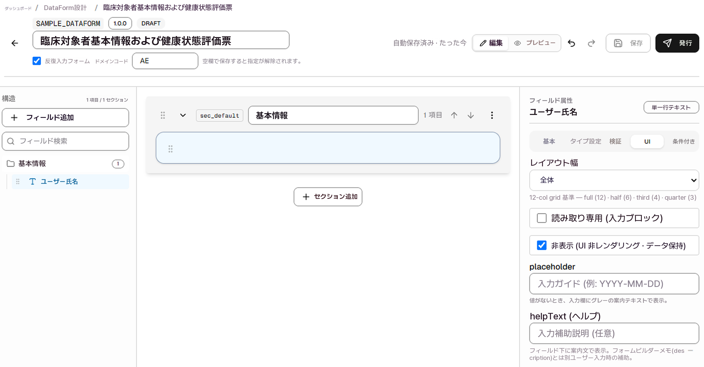
読み取り専用 (入力ブロック) — 値は表示されますが、ユーザーは修正できません。(このキャプチャでは解除状態)
非表示 (UI 非レンダリング · データ保持) — 入力画面に表示しません。すでに保存された値は削除されません。
キャンバスからフィールドが消え、セクションが空に見えます。
非表示にしても構造パネルにはそのまま残っています — 再度選択して設定を元に戻せます。
フォーム自体は正常で、上部に自動保存済みと表示されます。
注意事項
必須確認 データ破損 · フォーム完了不可
- • ⛔ 必須項目を非表示にしないでください。UIタブの非表示は画面上で隠すだけで、必須集計からは除外されません — ユーザーが入力できない項目が分母に残り、フォームを完了できなくなります。
- • 非表示はデータを削除しません。画面上で消えるだけなので、値を削除するにはフィールドを削除する必要があります。
誤解しやすい動作
- • 条件付きタブの非表示とは異なります。条件が合わずに非表示になったフィールドは、必須集計から除外されます6章。同じ「非表示」という表現を使いますが、検証での扱いが正反対なので、区別してください。
- • 読み取り専用と非表示は異なります。読み取り専用は「表示するが修正不可」、非表示は「表示しない」です。値を見せる必要がある場合は、読み取り専用を使用してください。
5.4placeholder · helpText
概要
ユーザーに何をどのように入力すべきかを知らせる二つの文言です。表示される位置と消えるタイミングが異なります。
画面説明
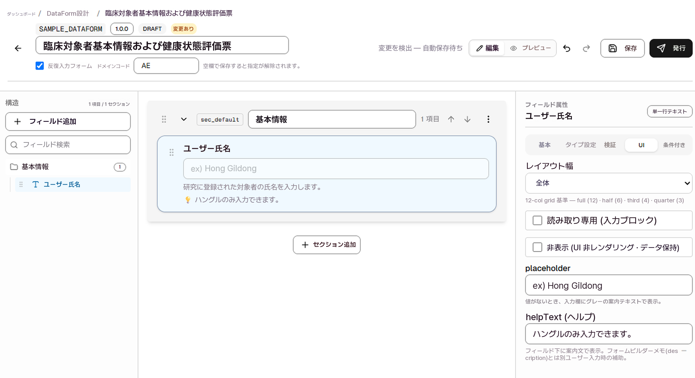
placeholder — 入力欄の中に表示する案内文を入力します。例は ex) Hong Gildong です。
入力欄の中にグレーで表示されます。ユーザーが入力を始めると消えます。
helpText (ヘルプ) — フィールドの下に表示する案内文を入力します。
フィールドの下に電球アイコン(💡)と一緒に表示されます。入力しても消えません。
注意事項
必須確認 データ破損 · フォーム完了不可
- • description と helpText は別々の項目です。画面の案内のとおり — helpText は「フォームビルダーメモ(description)とは別 — ユーザー入力時の補助」です。両方を入力すると、二行が一緒に表示されます。キャプチャのキャンバスでも、ヘルプと 💡 の文言がそれぞれ一行ずつ表示されています。
- • 形式の制限(3.3 正規表現)を設定した場合は、その形式を placeholder や helpText で案内してください。案内しないと、ユーザーは保存の段階になって初めてブロックされ、理由が分かりません。
誤解しやすい動作
- • placeholder は入力を始めると消えるため、入力中にも確認する必要がある案内は helpText に入力してください。
三つの文言の違い
| 項目 | 表示位置 | 入力を始めると | 設定場所 |
|---|---|---|---|
| placeholder | 入力欄の中 (グレー) | 消える | UIタブ |
| helpText | フィールドの下 (💡) | そのまま維持 | UIタブ |
| description | 表示名の下 | そのまま維持 | 基本タブ 2.1 |
条件付きタブ — 他の値に応じて表示する
- 6.1条件付き表示の有効化
- 6.2条件の設定
6.1条件付き表示の有効化
概要
他のフィールドの値に応じて、このフィールドを表示したり隠したりする機能です。「妊娠の有無 = はい」のときだけ妊娠週数を入力させるような分岐に使用します。
画面説明
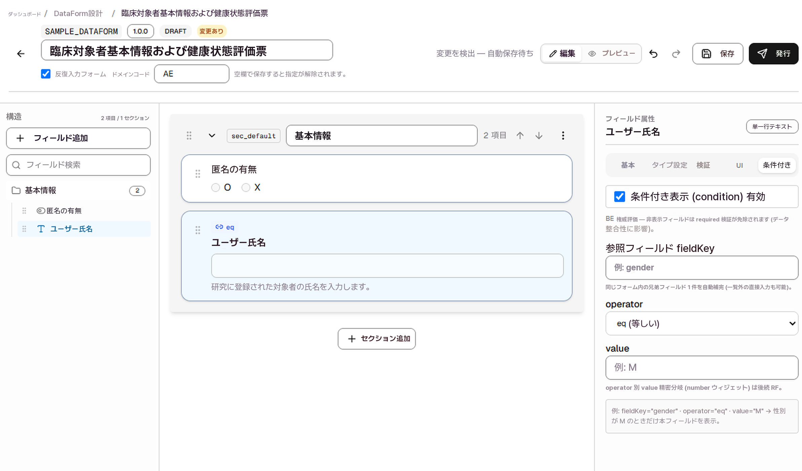
条件付き表示 (condition) 有効 — 選択すると、下の条件設定が表示されます。
キャンバスのフィールドの上に 🔗 eq バッジが表示され、条件が適用されたことを知らせます。
⚠ 画面の案内 — 「非表示フィールドは required 検証が免除されます (データ整合性に影響)。」 条件の判定はシステムが実行します。
参照フィールド fieldKey — 条件の基準となる、同じフォーム内の他のフィールドです。同じフォームの兄弟フィールドが自動補完され、一覧にない値を直接入力することもできます。
operator — 比較方法です。デフォルト値はeq (等しい)です。
value — 比較する値です。
下部の例 — fieldKey="gender" · operator="eq" · value="M" → 性別が M のときだけ本フィールドを表示。
注意事項
必須確認 データ破損 · フォーム完了不可
- • 条件を設定すると、必須検証が免除されることがあります。条件が合わずに非表示になっている間は、そのフィールドが必須でも、空のままフォームが完了します。これは不具合ではなく意図された動作です — 表示されない項目を必須として求めると、フォームを完了できないためです。
誤解しやすい動作
- • 条件の判定はシステムが実行します。画面上で隠すだけでなく、検証結果も合わせて変わります。
参考
- • 条件を有効にして参照フィールドを空欄にすると、条件は成立しません。必ず②~④をすべて入力してください。6.2
6.2条件の設定
概要
6.1 で有効にした条件を最後まで入力した状態です。この設定では、「匿名の有無」フィールドの値が O のときだけ、このフィールドが入力画面に表示されます。
画面説明
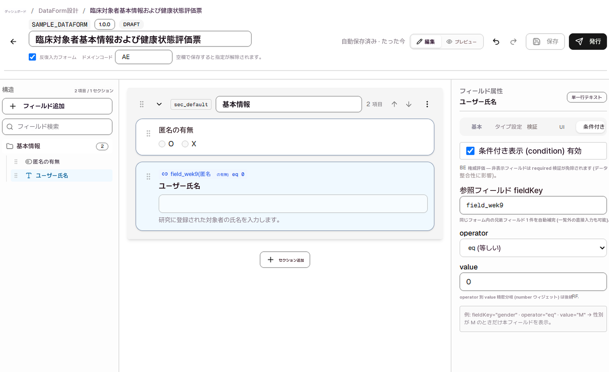
匿名の有無 が O のときだけ表示されるように設定した状態参照フィールド fieldKey = field_wek9 — 同じフォームの「匿名の有無」フィールドを指します。
operator = eq (等しい)
value = O
①~③をすべて入力した結果 — キャンバスのバッジが 🔗 field_wek9(匿名の有無) eq O に具体化されます。どのような条件かをすぐに確認できます。
参照先の「匿名の有無」フィールドが同じフォーム内にある必要があり、構造ツリーで確認できます。
下部の例 — fieldKey="gender" · operator="eq" · value="M" → 性別が M のときだけ本フィールドを表示。
注意事項
必須確認 データ破損 · フォーム完了不可
- • 参照フィールドは同じフォーム内にある必要があります。他のフォームの値は参照できません。
- • 参照フィールドの fieldKey を変更または削除すると、条件が壊れます。条件は表示名ではなく fieldKey で結び付いています。(2.1 の fieldKey の注意事項と同じ理由です。)
誤解しやすい動作
- • value は、参照フィールドに保存される値と同じ形で入力する必要があります。キャプチャのように選択フィールドを参照する場合は、画面に表示される文言ではなく、その選択肢の保存値(
O)を入力します。
参考
- • 条件を使用するとフォームが短くなり、不要な入力が減ります。ただし、条件が互いに衝突すると最後まで表示されないフィールドが生じるため、設定後にプレビューで必ず確認してください。
付録
- 7.1設定項目一覧
7.1単一行テキストの設定項目一覧
タブ別の設定項目
| タブ | 項目 | 何を決めるか | 本文 |
|---|---|---|---|
| 基本 | fieldKey | 値が保存される実際のキー (保存後の変更禁止) | 2.1 |
| label (表示名) | 画面に表示される項目名 | 2.1 | |
| description (ヘルプ) | 表示名の下の補足説明 | 2.1 | |
| 必須入力 | 必ず入力する必要があるか | 2.2 | |
| SDV検証対象 | CRA原資料照合の対象か · 検証必須かどうか | 2.3 | |
| AE意味ロール | 有害事象フォームでこのフィールドが意味するもの | ※ | |
| 未測定宣言を許可 | 「測定できなかった」を値として残せるか · 表示ラベル · 表示灯 | 2.4 | |
| タイプ設定 | minLength · maxLength | 文字数の下限 · 上限 (片方だけ指定可能) | 3.2 |
| pattern (正規表現) | 値が従うべき形式 | 3.3 | |
| prefix · postfix | 入力欄左右の固定文言 (保存されない) | 3.4 | |
| デフォルト値 (defaultValue) | 新規入力時にあらかじめ入力しておく値 | 3.5 | |
| 検証 | ruleType | 規則の種類 (値の範囲 · 形式(正規表現) など) | 4.2 · 4.3 |
| expression | 規則の条件 (値の範囲は min · max — 片方だけ指定可能) | 4.2 | |
| message | 違反時にユーザーに表示する文言 | 4.2 | |
| 違反時 · 有効 | 保存ブロック / 警告 · 規則の有効 · 無効 | 4.2 | |
| UI | レイアウト幅 | 12-col grid 上の幅 (全体 · 1/2 · 1/3 · 1/4) | 5.2 |
| 読み取り専用 | 表示するが修正できないように | 5.3 | |
| 非表示 | 画面に表示しない (保存値は保持 · 必須集計には残る) | 5.3 | |
| placeholder · helpText | 入力の案内文 (入力欄の中 / フィールドの下) | 5.4 | |
| 条件付き | 条件の有効化 | 条件付き表示を使用するかどうか (必須検証の免除) | 6.1 |
| 参照フィールド fieldKey | 条件の基準となる、同じフォームのフィールド | 6.2 | |
| operator · value | 比較方法と比較する値 | 6.2 |
必ず覚えておくこと
必須確認 データ破損 · フォーム完了不可
- • 保存した後に fieldKey を変更すると、既存のデータとの紐付けが切れます。2.1
- • 条件付き表示で非表示になったフィールドだけが、必須集計から除外されます。UIタブの非表示は除外されないため、必須項目を非表示にするとフォームを完了できません。5.3 · 6.1
- • 運用中のフォームで長さ · 形式の制限を狭めると、既存の値が再度保存されるときにブロックされることがあります。3.2 · 3.3
誤解しやすい動作
- • 値を修正すると SDV 検証が解除され、品質ステータスが PENDING に戻ります。2.3
- • タイプ設定の pattern と検証タブの形式(正規表現)規則は一緒に適用されます — 互いに食い違うと、どの値も保存できません。3.3 · 4.3
参考
- • 数値の大小比較 · 統計が目的であれば、単一行テキストではなく数値タイプを使用してください。
この文書で扱っていないもの
※ AE意味ロール — 基本タブにありますが、設定手順のキャプチャがないため、別の節を設けていません。有害事象(AE)フォームを使用するプロジェクトでのみ指定します。詳しい使い方は、AE 関連の文書を参照してください。
自動計算 (calculation) — タイプ設定タブに項目が表示されますが、単一行テキストでは使用しません。他のフィールドの値から値を算出する機能なので、数値タイプで使用してください。